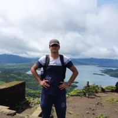
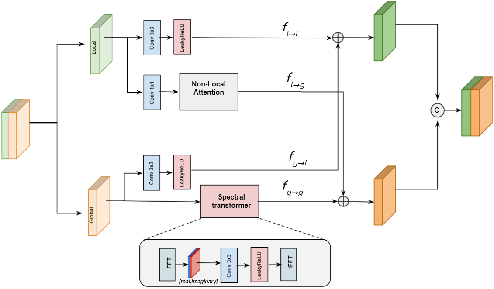

I am currently working as a Scientist in Signal and Image Processing Group
at Space Applications Center (SAC), Ahmedabad. My research interest broadly spans the application of Artificial Intelligence to solve computer vision problems, including
Image and Video Compression and Spatio-spectral Super-Resolution. I am also interested in studying and utilizing the theoretical aspects of Machine Learning to
explain and assess the behaviour of neural networks.
Prior to joining SAC, I graduated with Bachelors in Electronics and Communication Engineering from Indian Institute of Space Science
and Technology, where I was advised by Dr. Deepak Mishra during my undergraduate research in the field of Deep Video Compression.
News
- April 2022: Paper accepted in CVPR 2022 NTIRE Workshop
- April 2022: Paper accepted in CVPR 2022 CLIC Workshop
- May 2021: Paper accepted in IEEE National Conference on Communications ( NCC )
Research

NL-FFC: Non-Local Fast Fourier Convolution for Image Super Resolution
Abhishek Kumar Sinha , S. Manthira Moorthi, and Debajyoti Dhar